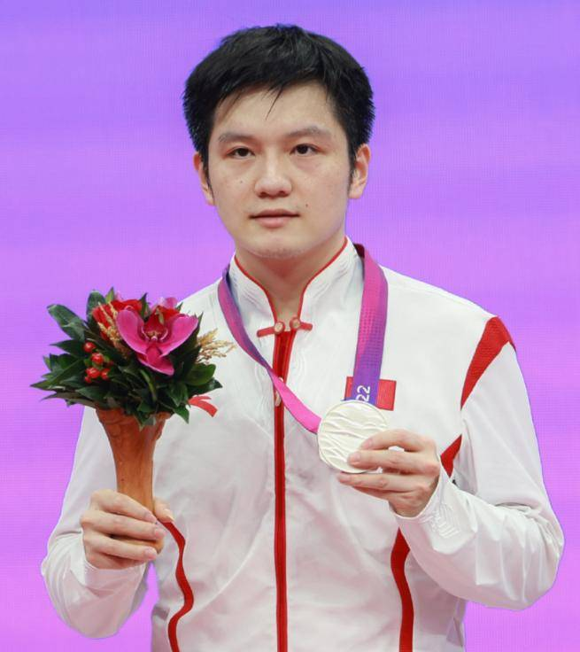
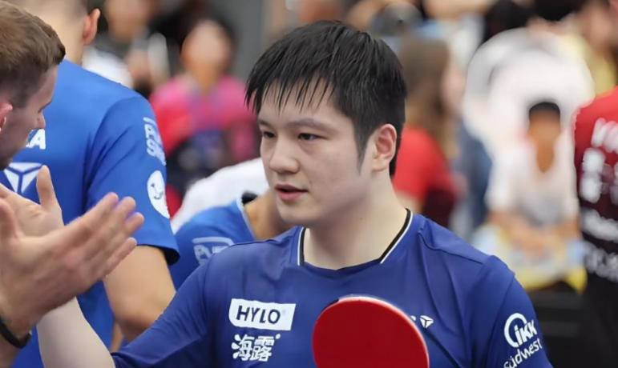

Profile · 01
人物档案
他打的是最讲秩序的球：右手横板、两面反胶、以正手弧圈为主轴推进。球场之外，他安静、寡言，习惯把情绪放进下一板球里。

领奖台上的樊振东
基本信息
- 姓名
- 樊振东（Fan Zhendong）
- 出生
- 1997 年 1 月，广东省广州市
- 祖籍
- 湖南省衡阳市
- 项目
- 乒乓球 · 男子单打 / 团体
- 握拍
- 右手横板，两面反胶
- 打法
- 弧圈结合快攻，以正手弧圈为核心，两面均衡
- 身份
- 国际级运动健将；上海市青联常委、体育界别副主任
- 俱乐部
- 德甲杜塞尔多夫（2026 年 7 月 1 日起）；国内代表上海队
- 启用年份
- 2008 年进入八一队，2012 年入选国家队
器材配置（公开可查的品牌拍面组合）
底板为蝴蝶 Viscaria 结构（樊振东 ALC 特注），正手使用红双喜狂飚 3 国狂蓝海绵，反手为蝴蝶 Dignics 09C。该配置随赛季有所调整，仅供参考。
Growth
从少年宫到国家队
五岁的第一次挥拍，决定了他此后二十多年的节奏。
5 岁
少年宫启蒙
在广州市珠海区少年宫开始接触乒乓球，因为脸蛋圆润，队友和教练都叫他“小胖”。
9 岁
专业训练
进入广州体育职业技术学院，开始接受系统训练，日常从早课一直排到晚课。
11 岁
进入八一队
被八一队主教练王涛选中，13 岁办理入伍手续，开始军事化管理的生活。
15 岁
入选国家队
2012 年进入中国国家乒乓球队，同年世青赛包揽男单、男双、男团三冠。
Style
技术特点
樊振东的技术底色是“稳”。站位偏后、重心低，接发球不急于抢攻，习惯用短球控制和反手拧拉把对手逼进相持，再用正手弧圈的质量终结回合。
他的反手拧拉是中国男队新一代的标志性技术：出手快、弧线低、旋转强，能在接发球环节直接转守为攻。而正手连续拉冲的稳定性，则让他在长回合里极少先失误。
随着年龄增长，他的比赛节奏也在变化——从早年的“拼速度”，逐渐转向用落点、旋转和节奏变化控制对手。

关于姓名
“樊振东”三个字在国际赛场的记分牌上写作 FAN Zhendong。外国球迷更习惯他的昵称 “Little Fatty”，国内球迷则常叫他“小胖”或“东哥”。这些称呼，都指向同一个从广州走出去的少年。